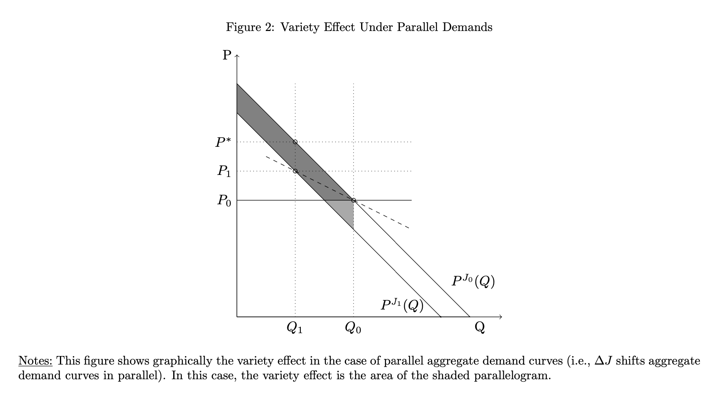
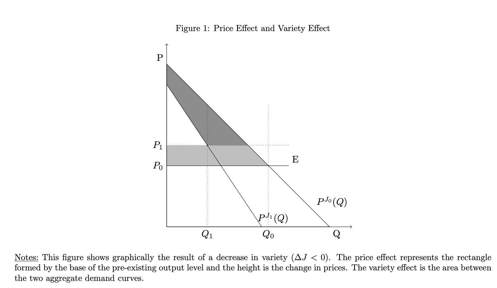

Sketch and intuition
|
|
Question: number of choices or varieties \(J \rightarrow M, J < M\), how would the welfare of consumer change?
Two effects, one demand moving inside and one price drop down due to competition.
consider the area of consumer surplus change. Keys: one consumer, parallel change.

Symmetric model of demand: symmetric discrete choice model
|
|
consumers \(i\) of mass unity, purchase a single product \(j \in \{ 1, \ldots, J \}\) or outside option \(j = 0\)
| \(\displaystyle {\textrm{u_{\operatorname{ij}} (y_j, p_j) = \alpha (y_i - p_j) + \delta_j + (1 - \sigma) \nu_i + \sigma \varepsilon_{\operatorname{ij}}}}\) | (1) |
\(u_{i 0} = \alpha y_i + \varepsilon_{i 0} .\)
\((v_i, \varepsilon_{\operatorname{ij}})\)'s distribution \(\Rightarrow\) different models of discrete choice (probit, Logit, Nested Logit, or other GEV family).
In general, we assume for \(j \neq 0\), the random utility shocks (\(\varepsilon_{\operatorname{ij}}\)) are identical and independently (continuously) distributed and independent of (\(v_i\)), but we allow \(\varepsilon_{i 0}\) to be correlated with \(\nu_i\). In section 3 the author relax the iid assumption.
Symmetric discrete choice model 2
|
|
Assume \(0\) probability of ties and given (1), the demand for j is defined as
| \(\displaystyle q_j (p_1, \ldots, p_J, J) = \mathbb{P} (u_{\operatorname{ij}} (y_i, p_j) = \max_{j' \in \{ 0, \ldots, J \}} u_{\operatorname{ij}'} (y_i, p_{j'}))\) | (2) |
Imposing symmetry, \(\delta_j = \delta\) and \(p = p_j\) for all \(j\), aggregate demand (for all products excluding the outside good) when \(J\) varieties are available as:
| \(\displaystyle Q (p, J) = \sum_{j = 1}^J q_j (p, J)\) | (3) |
Similarly, define \(P (Q, J)\) to be the inverse aggregate demand corresponding to \(Q (p, J)\). ?existence of \(P\)
Symmetric continuous choice model
|
|
representative consumer's utility function \(u_J (q_1, \ldots, q_J, m) = h_J (q_1, \ldots, q_J) + m\) for any \(h_J : \{ 1, \ldots, J \} \rightarrow \mathbb{R}\). symmetric in all its arguments, continuously differentiable, strictly quasi-convave and \(h (0, \ldots, 0) = 0\). \(m\) is interpreted as money.
| \(\displaystyle \begin{array}{c} \max u_J (q_1, \ldots, q_J, m) = h_J (q_1, \ldots, q_J) + m\\ s.t. m + \sum_{j = 1}^J p_j q_j = y \end{array}\) | (4) |
when \(p_j = p\), define \(H_J (Q) = h_J \left( \frac{Q}{J}, \ldots, \frac{Q}{J} \right)\), the above problem turns into
FOC \(\Rightarrow P (Q, J) = H'_J (Q)\). Inverse demand function.
Symmetric continuous choice model
|
|
Given the optimal aggregate quantity, strict quasi-concavity of \(h_J\) implies the consumer chooses symmetric quantities \(q_j = \frac{Q}{J}\) for all \(j\) in the original problem.
Let \(P (Q, J)\) be continuously differentiable and strictly decreasing in \(Q\). Let \(H\) be any antiderivative \(\int P (Q, J) \operatorname{dQ}\). Then, for some \(\rho \in (0, 1)\), the following is a strictly quasi-concave direct utility function that rationalizes \(P (Q, J)\) for integer \(J\) when all prices \(p_j = p\)
We could also understand \(J\) as continuous if quantity \(q\) is continuous \([0, J] \rightarrow \mathbb{R}\) and let
Consumer surplus
|
|
Discrete choice model:
Consumer welfare as changes in aggregate demand
|
|
Proposition
| \(\displaystyle \operatorname{CS} (p, J) = \int_p^{\infty} Q (s, J) \operatorname{ds}.\) | (5) |
Thus, consumer surplus is equal to the integral of aggregate demand.
When there is a continuum of varieties then \(\)\(\operatorname{CS} (p, J) = \int_p^{\infty} Q (s, J) \operatorname{ds}\) is differentiable in both \(p\) and \(J\).
Proof
|
|
Proof. For discrete choice model, Williams-Daly-Zachary theorem gives \(\frac{\partial \operatorname{CS}}{\partial p_j} = - q_j\). So \(\frac{\operatorname{dCS}}{\operatorname{dp}_j} = \Sigma_{j = 1}^J \frac{\partial \operatorname{CS}}{\partial p_j} = - Q (p, J)\). So \(\operatorname{CS} (p, J) = \int_p^{\infty} Q (s, J) \operatorname{ds}+ \frac{1}{\alpha} \mathbb{E} [u_{i 0}]\).
Continuous choice model: If the consumer has preferences given by \(u (q_1, . . ., q_J, m) = h_J (q_1, . . ., q_J) + m\) for any \(h_J\) symmetric in all its arguments, continuously differentiable, strictly quasi-concave and \(h (0) = 0\), and if the consumer faces symmetric prices \(p_j = p\), we can represent consumer surplus as
Welfare effects of variety
|
|
the impact of a small change in the number of varieties J on consumer surplus
we assume in the following that \(J\) is a continuous variable and \(Q (p, J)\) is defined for any \(J \in \mathbb{R}\) and is continuously differentiable
Definition
| \(\displaystyle - Q \frac{\operatorname{dp}}{\operatorname{dJ}}\) | (6) |
Definition
| \(\displaystyle \Lambda (Q, J) := \int_{P (Q, J)}^{\infty} \frac{\partial Q}{\partial J} (s, J) \operatorname{ds}\) | (7) |
| \(\displaystyle \frac{\operatorname{dCS}}{\operatorname{dJ}} = - Q \frac{\operatorname{dp}}{\operatorname{dJ}} + \Lambda\) | (8) |
|
|

|
|
| \(\displaystyle \Lambda = \int_p^{\infty} \frac{\partial Q}{\partial J} ({\color{green}{s}}, J) d {\color{green}{s}} = \int_0^Q \frac{\partial P}{\partial J} (s, J) \operatorname{ds}= Q \frac{\overline{\partial P}}{\partial J}\) | (9) |
the variety effect is the total change in willingness to pay for the units that are atually exchanged.
Where the average change in willingness to pay for intramarginal units as J changes is \(\)\(\frac{\overline{\partial P}}{\partial J} = \frac{1}{Q} \int_0^Q \frac{\partial P}{\partial J} (s, J) \operatorname{ds}\).
If we could fully characterise the demand before and after (non-parametrically) then this is enough, however, usually it's not possible. E.g. prices where quantity near 0 is never in data.
Sufficient statistics
|
|
Theorem
| \(\displaystyle \Lambda (Q, J) = Q \frac{\overline{\partial P}}{\partial J} (Q, J)\) | (10) |
Furthermore, if the inverse aggregate demands are parallel, \(\frac{\partial P}{\partial Q} (Q, J) = \frac{\partial P}{\partial Q} (Q, J')\) for all \(J, J'\) and \(Q\), then the average change in willingness to pay is equal to the marginal change in willingness to pay, \(\)\(\frac{\overline{\partial P}}{\partial J} (Q, J) = \frac{\partial P}{\partial J} (Q, J)\). Therefore we obtain:
| \(\displaystyle \frac{\overline{\partial P}}{\partial J} (Q, J) = \left( \frac{\operatorname{dP}}{\operatorname{dQ}} - \frac{\operatorname{dP}}{\operatorname{dQ}} |_J \right) \frac{\operatorname{dQ}}{\operatorname{dJ}}\) | (11) |
where \(\)\(\frac{\operatorname{dP}}{\operatorname{dQ}} |_J = \frac{\operatorname{dP}}{\operatorname{dQ}}\) denotes the slope of inverse demand when variety \(J\) is held fixed and \(\frac{\operatorname{dP}}{\operatorname{dQ}} = \frac{\operatorname{dP} (Q (J), J)}{\operatorname{dJ}} / \frac{\operatorname{dQ}}{\operatorname{dJ}}\) denotes the slope of inverse demand when \(J\) is variable.
Proof.
|
|
Proof. Average change in WTP for inframarginal units is \(\)\(\frac{\overline{\partial P}}{\partial J} = \frac{1}{Q} \int_0^Q \frac{\partial P}{\partial J} (s, J) \operatorname{ds}\). Integrating by parts we have
Assume for some \(J, J'\) inverse aggregate demands are parallel, \(\frac{\partial P}{\partial Q} (Q, J) = \frac{\partial P}{\partial Q} (Q, J')\), then there exists \(d\) s.t. \(P (Q, J) = P (Q, J') + d\). So
Let \(J' \rightarrow J\), second part disappears. And \(d \rightarrow \frac{\partial P (Q, J)}{\partial J} \operatorname{is}\operatorname{constant}\). So \(\frac{\overline{\partial P}}{\partial J} = \frac{\partial P (Q, J)}{\partial J} = \frac{\operatorname{dP} (Q (J), J)}{\operatorname{dJ}} - \frac{\partial P (Q, J)}{\partial Q} \frac{\operatorname{dQ} (J)}{\operatorname{dJ}} = \left( \frac{\operatorname{dP}}{\operatorname{dQ}} - \frac{\operatorname{dP}}{\operatorname{dQ}} |_J \right) \frac{\operatorname{dQ}}{\operatorname{dJ}}\).\(\Box\)
Fig 2: geometrical representation
|
|
|
|
Microfoundations for parallel demands: discrete
|
|
Example
With symmetric varieties \(\delta_j = \delta\) and symmetric price equilibrium \(p_j = p\), aggregate demand is equal to:
Example 1 cont'd
|
|
Inverse aggregate demand is
| comment: |
Additionally, the coefficient on log variety is different than the coefficient on output. Thus, in this model, the value of additional variety is not pinned down fully by the price elasticity of demand, which is in contrast to the standard models considered in the trade literature (see for example, Feenstra 1994; Broda and Weinstein 2006).
\(\operatorname{CS}= \frac{1}{\alpha} \log (1 + J^{\sigma} e^{\delta - \alpha p})\)
The variety effect in example 1
|
|
Method1: \(\operatorname{CS}= \frac{1}{\alpha} \log (1 + J^{\sigma} e^{\delta - \alpha p})\), \(\frac{\operatorname{dCS}}{\operatorname{dJ}} = - Q \frac{\operatorname{dp}}{\operatorname{dJ}} + \Lambda, \frac{\operatorname{dCS}}{\operatorname{dJ}} = \frac{1}{\alpha} \cdot \frac{1}{1 + J^{\sigma} e^{\delta - \alpha p}} \cdot \left( \sigma J^{\sigma - 1} e^{\delta - \alpha p} + J^{\sigma} e^{\delta - \alpha p} (- \alpha) \frac{\operatorname{dp}}{\operatorname{dJ}} \right) = \frac{\sigma}{\alpha} \frac{J^{\sigma - 1} e^{\delta - \alpha p}}{1 + J^{\sigma} e^{\delta - \alpha p}} - \frac{J^{\sigma} e^{\delta - \alpha p}}{1 + J^{\sigma} e^{\delta - \alpha p}} \frac{\operatorname{dp}}{\operatorname{dJ}} = \frac{\sigma}{\alpha} \frac{Q}{J} - Q \frac{\operatorname{dp}}{\operatorname{dJ}}\). So variety effect is \(\)\(\frac{\sigma}{\alpha} q\).
Method2: by knowing variety effect is \(- Q \frac{\operatorname{dp}}{\operatorname{dJ}}\), calculate \(\frac{\operatorname{dp}}{\operatorname{dJ}}\), same result.
Interpretation:
\(\)\(\frac{\sigma}{\alpha}\) is the average willingness to pay for a unit of the additional variety.
\(q\) is the market share of the new variety.
models with Gumbel distributed errors approximates NL
|
|
Definition
as \(J \rightarrow \infty\) for some location and dispersion parameters \((\mu (J), \sigma (J)) .\)
Lemma
Translation: the limit distribution would be Gumbel.
|
|
Theorem
domain of attraction of the Gumbel distribution. Then, for any large enough \(J\) and \(K\) there
exists \(d\) such that for all \(p \in \mathbb{R}\) we have \(Q (p, J) \approx Q (p + d, K)\). Specifically, for all p we have
Therefore the inverse demands are approximately parallel \(P (Q, K) \approx P (Q, J) + d\) for all \(Q\), for large enough \(J\) and \(K\).
Domain of attraction of Gumbel means distribution would converge to Gumbel.
Continuous choice models
|
|
Inverse aggregate demands are parallel,\(\frac{\partial p}{\partial Q} (Q, J) = \frac{\partial p}{\partial Q} (Q, J')\) iff they are linear separable in \(Q\) and \(J\).
Continuous \(J\): any family of parallel inverse demands can be written as \(p (Q, J) = a (J) - f (Q)\) for increasing and differentiable functions \(a (J)\) and \(f (Q)\). Letting \(F\) be any intergral function of \(f\). Then
for some \(\rho \in (0, 1)\) is a direct utility function that rationalizes \(P (Q, J)\) given that firms are playing a symmetric price equilibrium.
|
|
When \(J\) is discrete, \(u_J (q, m) = a (J) h_J (q) - F (h_J (q)) + m\) rationalizes \(P (Q, J)\) for any \(h_J\) which is symmetric in all its arguments, continuously differentiable, strictly quasi-concave, with \(h_J (0, \ldots, 0) = 0\) and \(h_J (q, \ldots, q) = Q\).
Example 2 inverse demands with constant pass-through
|
|
Example
\(P (Q, J) = \alpha_J - \beta_J Q^{\delta}\), for \(\delta > 0\)
\(\)\(P (Q, J) = \alpha_J - \beta_J \log (Q)\),
\(\)\(P (Q, J) = \alpha_J - \beta_J Q^{\frac{1}{\eta}}\), for \(\eta < 0\) (CES inverse demand shifted by \(\alpha_J\)).
If \(\beta_J\) is not dependent on \(J\), that is \(\beta_J = \beta, \forall J\), then \(Q\) and \(J\) are linear separable, so they shifts in parallel as \(J\) changes.
(Fabinger and Weyl 2016): \(P (Q, J) = \alpha_J + \beta Q^t + \gamma Q^u\), linear separable as well.
Two limitations wrt no-income effects and parallel demand
|
|
When there is income effect, marshallian demand cannot be used to estimate welfare, so they extend their framework to Hicksian compensated demand. Might be of interest to Trade models (gains both from variety and general equilibrium effects)
Similarity of this approach to that in Benassy (1996) and Behrens, Kanemoto and Murata (2017) in the case of CES sub-utility functions.
Let
Marshallian demand does not depend on \(J\): \(Q = \frac{\alpha I}{p}\), Hicksian demand does \(Q^C (p, U, J) = \frac{U}{b (J)} \left( \frac{\alpha}{p (1 - \alpha)} \right)^{1 - \alpha} .\) Then CV or EV gives \(\Lambda (p, J) = \frac{\partial \operatorname{CV}}{\partial J} (p, J) = \frac{\partial \operatorname{EV}}{\partial J} (p, J) = I \frac{b' (J)}{b (J)}\)
General model: preliminary
|
|
\(p_j, \delta_j\) could now have a suffix, but
Caveat: price change due to variety expansion or shrinkage is assumed to be same.
General model: Asymmetric demands and prices
|
|
Preferences (discrete choice): a population of statistically identical and independent consumers of mass unity. The utility of individual \(i\) who purchases product \(j = 0, \ldots, J\) is given by: \(u_{\operatorname{ij}} (y_i, p_j) = \alpha (y_i - p_j) + \eta_{\operatorname{ij}}\), \(\eta_{\operatorname{ij}}\) have a general joint cumulative distribution function \(F\) over \(\mathbb{R}^J\) that admits a density function \(f\).
Given \(0\) probability of ties, define the demand for product \(j\) as \(q_j (p_q, \ldots, p_J, J) = \mathbb{P} (u_{\operatorname{ij}} (y_i, p_j) = \max_{j' \in \{ 0, \ldots, J \}} u_{\operatorname{ij}'} (y_i, p_{j'}))\).
Aggregate demand is defined (excluding outside good) as \(Q (p_1, \ldots, p_J, J) = \sum_{j = 1}^J q_j (p_1, \ldots, p_J, J)\).
|
|
Preferences (continuous choice): repr. consumer's utility function when \(J\) varieties
for any \(h_J : \{ 1, \ldots, J \} \rightarrow \mathbb{R}\) which is continuously differentiable, strictly quasi-concave and \(h (0, \ldots, 0) = 0\). Let \(q_j (p_1, \ldots, p_J, J)\) be the Marshallian demand for variety \(j\) and \(Q (p_1, \ldots, p_J, J) = \sum_{j = 1}^J q_j (p_1, \ldots, p_J, J)\) the aggregate demand.
|
|
Proposition
where \(P_J = (p_1, \ldots, p_J)\) are the prices for the existing J products, and \((p_{J + 1}, ..., p_M)\) are
the prices at which the new M − J products are introduced.
The intuition is that the welfare gain from the new varieties can be calculated by integrating the demand for new varieties.
|
|
Similar to proposition 1, the variety effect can also be stated in terms of aggregate demands as:
where \(\boldsymbol{1_K}\) is a \(K\)-dimensional vector of ones, and \(\)\(\boldsymbol{P_M} = (\boldsymbol{P_J}, p_{J + 1}, \ldots, p_M)\).
Assume \(\exists\) some price index \(d\) such that \(Q_M (\boldsymbol{P_M} + (s + d) \boldsymbol{1_M}) = Q_J (\boldsymbol{P_J} + s \boldsymbol{1_J})\) for all \(s \in \mathbb{R}\).
\(\Lambda = \int_0^d Q_J (\boldsymbol{P_J} - s \boldsymbol{1_J}) \operatorname{ds}\). By the mean value theorem for integrals, there exists \(d' \in [0, d]\) such that \(\Lambda = \int_0^d Q_J (\boldsymbol{P_J} - s \boldsymbol{1_J}) \operatorname{ds}= d \ast Q_J (\boldsymbol{P_J} - s \boldsymbol{1_J})\).
Intuitively, as \(M \rightarrow J\) we have \(d' \rightarrow d\) and we obtain a first order approximation for the variety effect \(\Lambda \approx d \ast Q_J (\boldsymbol{P_J})\).
Theorem 3: generalization of theorem 1
|
|
Theorem
| \(\displaystyle \Lambda = d \ast Q_J (\boldsymbol{P_J} - d' \boldsymbol{1_J}) .\) | (12) |
Furthermore, let \(\)\(\boldsymbol{P_M}^1 = \boldsymbol{P_M} + s \boldsymbol{1_M}\), \(\Delta P = s\), and \(\Delta Q = Q (\boldsymbol{P_M}^1) - Q (\boldsymbol{P_J})\) then
| \(\displaystyle d = \left( \frac{\Delta P}{\Delta Q} - \frac{\operatorname{dP}}{\operatorname{dQ}_J} |_J \right) \Delta Q + o ((s - d)^2)\) | (13) |
where \(\frac{\operatorname{dP}}{\operatorname{dQ}_J} |_J = \left( \frac{\operatorname{dQ}_J (\boldsymbol{P_J} + t \boldsymbol{1_J})}{\operatorname{dt}} \right)^{- 1} |_{t = 0}\).
Proof. By assumption \(Q_M (\boldsymbol{P_M} + (s + d) \boldsymbol{1_M}) = Q_J (\boldsymbol{P_J} + s \boldsymbol{1_J}) \Rightarrow\) \(Q_M (\boldsymbol{P_M}^1) = Q_M (\boldsymbol{P_M} + s \boldsymbol{1_M}) = Q_J (\boldsymbol{P_J} + (s - d) \boldsymbol{1_J})\), then the second part follows directly from first-order Taylor approximation:
Features of theorem 3
|
|
They defined \(\)\(\boldsymbol{P_M}^1 = \boldsymbol{P_M} + s \boldsymbol{1_M}\), meaning to assume that all prices adjust uniformly after the introduction of the new varieties. Restrictive but necessary to apply talor approximation, and testable.
\(\frac{\operatorname{dQ}_J}{\operatorname{dP}} |_J = \frac{\operatorname{dQ}_J (\boldsymbol{P_J} + t \boldsymbol{1_J})}{\operatorname{dt}}\) interpreted as the short-run slope of aggregate demand in the direction of uniform price changes, that connects the interpretation of (14) with equation (11) in symmetric case. This is also useful feature in tax related cases, where tax induce uniform price change that estimating this variable is easier.
The assumption \(Q_M (\boldsymbol{P_M} + (s + d) \boldsymbol{1_M}) = Q_J (\boldsymbol{P_J} + s \boldsymbol{1_J})\) for all \(s \in \mathbb{R}\) means parallel demand: first, we could make sure there is indeed a inverse demand function (price as total quantity). For any \(Q \in \mathbb{R}^+\), there is a unique s such that \(Q_J (\boldsymbol{P_J} + s \boldsymbol{1_J}) = Q\), so \(P (Q, J)\) exists. Second, we know the assumption expressed in price is \(P (Q, J) + d = P (Q, M) \forall Q \in \mathbb{R}^+\). So parallel. \(\)
d means avergage change in willingness to pay, similar to that in symmetric case.
Example: NestedLogit revisited
|
|
\(\delta_j, p_j\) may be different now. \(Q_J (p_1, \ldots, p_J) = \frac{\left( \Sigma_{j = 1}^J e^{\frac{\delta_j - \alpha p_j}{\sigma}} \right)^{\sigma}}{1 + \left( \Sigma_{j = 1}^J e^{\frac{\delta_j - \alpha p_j}{\sigma}} \right)^{\sigma}}\), target: calculate the expression of \(d\) such that for all \(s\) we have \(Q_M (\boldsymbol{P^M} + s \boldsymbol{1_M}) = Q_J (\boldsymbol{P_J} + (s - d) \boldsymbol{1_J}) = \frac{\left( \Sigma_{j = 1}^J e^{\frac{\delta_j - \alpha (p_j + s - d)}{\sigma}} \right)^{\sigma}}{1 + \left( \Sigma_{j = 1}^J e^{\frac{\delta_j - \alpha (p_j + s - d)}{\sigma}} \right)^{\sigma}} = \frac{\left( \Sigma_{j = 1}^M e^{\frac{\delta_j - \alpha (p_j + s)}{\sigma}} \right)^{\sigma}}{1 + \left( \Sigma_{j = 1}^M e^{\frac{\delta_j - \alpha (p_j + s)}{\sigma}} \right)^{\sigma}}\) easily we could get \(d = \frac{\sigma}{\alpha} \log \left( \frac{\Sigma_{j = 1}^M e^{\frac{\delta_j - \alpha (p_j)}{\sigma}}}{\Sigma_{j = 1}^J e^{\frac{\delta_j - \alpha (p_j)}{\sigma}}} \right)\).
The change in average/overall willingness to pay? rather than “the average change in willingness to pay”.
Estimation of \(\Lambda\) the variety effect
|
|
Consider a sales tax \(\tau\), some products has experience \(\tau\) and some not ???, we know from theorem 3 that \(\Lambda = d \ast Q_J (\boldsymbol{P_J} - d' \boldsymbol{1_J}) .\) and \(d = \left( \frac{\Delta P}{\Delta Q} - \frac{\operatorname{dP}}{\operatorname{dQ}_J} |_J \right) \Delta Q + o ((s - d)^2)\), omiting the \(o\), and knowing one unit of change of \(\tau\) induce price changes \(\frac{\operatorname{dp}}{d \tau}\), we have
Estimation: those hold \(J\) fixed is those in short-run and those \(J\) is viable is long-run.